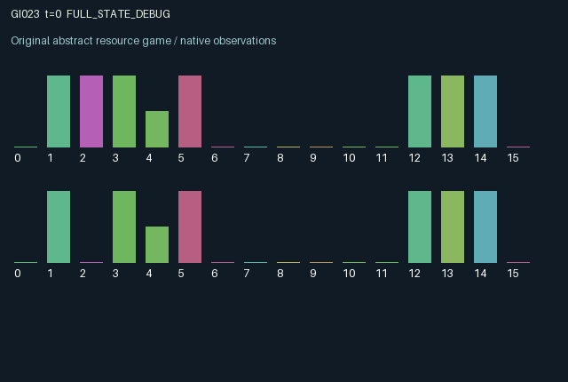

GI023 / LEGACY_ARRAY
Bidirectional messages under persistent private decoding rules
2 agents5 actions16 observation columns32 original horizonRuntime: PASS
Release verification episode
Untrained uniform legal actions. Actual JAX state sampled along the full original episode; full-state debug camera. No human performance or learning claim.

Run this game
crucibles play --game 23
Start Python locally, then open the address printed by the terminal. Installation, multiplayer, takeover and keyboard controls →
Objective, rewards & ending
Exact task contract
{
"termination": "Original kernel t >= 32; see mechanism and source"
}Declared per-step reward bounds: -1.0 to 1.0. Observability: source_defined.
Rules
Original mechanism document (historical status wording retained)
# Bidirectional messages under persistent private decoding rules Candidate: astra-d2-00023. This is a parentless source proposal with no supplied predecessor, score, or feedback. Each role is both a sender and a receiver. It observes its own private task bit and private decoder bit. Action 0 waits. Actions 1 and 2 transmit symbol zero or one to the other role, attaching the sender's current task bit as an initially hidden payload. Action 3 flips the agent's persistent decoder bit. Action 4 accepts its current incoming message when that message has aged for at least one transition. Reception applies the decoder to the old incoming symbol by addition modulo two, then compares the result with the hidden payload. An agent chooses only one action per transition, so sending, accepting and changing its own decoder compete for time. The sender selects the symbol but cannot directly select or observe the receiver's decoder. The receiver controls the timing and interpretation of a stored message. Decoders persist and reinterpret even messages sent before a decoder change. Correct acceptance gives both participants a positive payoff; incorrect acceptance penalizes both, at different magnitudes. A newly sent message has age zero. It must remain stored for a further transition before acceptance is legal. Sending another message can replace an unaccepted message, incurring an additional sender cost. If an old message is accepted while a fresh one arrives, the old one settles and the fresh one remains pending. Payloads are captured at transmission: later private task refreshes do not retroactively change a stored message. Private tasks refresh on outgoing acceptance or every fourth transition, using only the supplied step key. A receiver has persistent fluency, which rises on correct acceptance, falls on mistakes, and also falls after changing its decoder. Fluency and message age scale correct-payment quality. This creates a cost for repeatedly changing convention and a loss from leaving messages unaccepted. Incorrect acceptance reveals the old payload after the decision, so feedback can inform later communication without providing the answer before acceptance. The sixteen observation columns are time fraction, role sign, own task, own decoder, own fluency, visible incoming symbol or -1, incoming pending flag, incoming age fraction, outgoing pending flag, outgoing age fraction, last incoming success/failure feedback, last outgoing feedback, last accepted decoded bit or -1, last accepted true payload or -1, visible outgoing symbol or -1, and cumulative transmissions divided by 32. The other role's current task, decoder and fluency are private. Correct recipient and sender payments have coefficients 0.65 and 0.35 times bounded quality; incorrect payments are -0.45 and -0.25. Sending, decoder changes and replacement add small costs. The final reward clips this finite sum to [-1, 1]. Both roles terminate at transition 32 and retain their terminal observations. This is a generic sender-receiver coordination and signaling mechanism with asynchronous two-way messages, persistent private codebooks, replacement and action-dependent proficiency. It is not claimed to be unrelated to familiar communication games, structurally unique, eligible for the pool, successfully compiled or effective for learning. The author has not executed candidate code.
Commands
0Action 0; see mechanism and source
1Action 1; see mechanism and source
2Action 2; see mechanism and source
3Action 3; see mechanism and source
4Action 4; see mechanism and source
Roles & abilities
agent_0 Original legacy agent; see mechanism and source
agent_1 Original legacy agent; see mechanism and source
Observation permissions
Training receives only the original observation rows. Role cameras use declared visibility; debug cameras are explicitly marked. Local benchmark records log debug exposure and role takeover history.
Exact observation layout
[]
Entity visibility & attributes
[]
Actual verification & provenance
Per-game execution receipt
{
"game": "gi023",
"status": "PASS",
"verification_revision": 2,
"source_sha256": "8bbaf152b4972bd091a12b166cf4bf713357066e8e06a9db1771e81499e441a4",
"seed": 20261101,
"runtime": {
"jax": "0.4.38",
"numpy": "1.26.4",
"devices": [
"TFRT_CPU_0"
]
},
"dimensions": {
"num_agents": 2,
"observation_size": 16,
"num_actions": 5,
"max_steps": 32
},
"checks": {
"eager_reset": {
"status": "PASS",
"seconds": 0.7339246273040771
},
"observation_spaces_legal_masks": {
"status": "PASS",
"seconds": 0.16464591026306152
},
"eager_step": {
"status": "PASS",
"seconds": 0.7881369590759277
},
"jit_reset": {
"status": "PASS",
"seconds": 0.48697352409362793
},
"jit_step": {
"status": "PASS",
"seconds": 0.34169912338256836
},
"eager_jit_integer_parity_float_measurement": {
"status": "PASS",
"seconds": 0.0009250640869140625
},
"jit_vmap_reset": {
"status": "PASS",
"seconds": 0.507559061050415
},
"jit_vmap_step": {
"status": "PASS",
"seconds": 0.5556313991546631
},
"outer_autoreset_api": {
"status": "PASS",
"seconds": 0.5874416828155518
},
"full_original_horizon_episode_and_render": {
"status": "PASS",
"seconds": 1.0127060413360596
}
},
"human_scores": null,
"browser_controls": "PENDING",
"failures": [],
"elapsed_seconds": 5.613984823226929,
"float_parity_max_abs": 0.0,
"numerical_parity": "EXACT",
"raw_terminal_absorbing": "NOT_PART_OF_ORIGINAL_LEGACY_CONTRACT",
"terminal_outer_reset": "PASS",
"episode_steps": 32,
"scripted_random_returns": [
-2.190479937940836,
-2.594719886779785
],
"terminal": true,
"demo_information": "FULL_STATE_DEBUG",
"demo_frames": 33,
"render_roles_checked": 2
}Chromium control verification
{
"game": "gi023",
"status": "PASS",
"human_scores": null,
"engineering": true,
"checks": [
"catalog_selected_and_real_native_reset",
"dom_queue_and_native_step",
"second_participant_ownership_and_native_joint_step",
"all_roles_individually_controllable_no_role_cap",
"explicit_debug_camera",
"release_to_pure_ai_without_reset"
],
"ui_sha256": "15b5861d23b3c42811865c954d5a988280bbfd21cf8e93754be2437a027158c5",
"seconds": 2.9112088680267334
}Original identity and file hashes
{
"id": 23,
"key": "gi023",
"title": "Bidirectional messages under persistent private decoding rules",
"summary": "",
"tags": [],
"family": "legacy_array",
"dimensions": {
"num_agents": 2,
"observation_size": 16,
"num_actions": 5,
"max_steps": 32
},
"source_sha256": "8bbaf152b4972bd091a12b166cf4bf713357066e8e06a9db1771e81499e441a4",
"manifest_sha256": "6f3fb49d7d29b1991c8799cef167b5d33e691c2bdf6cb6c94a447fb19ee99ad4",
"files": [
{
"file": "candidate.py",
"sha256": "8bbaf152b4972bd091a12b166cf4bf713357066e8e06a9db1771e81499e441a4",
"bytes": 5828,
"origin": "work/exp_2/astra_generation/discovery_v2/initial/candidate_00023/attempt_00/candidate.py"
},
{
"file": "mechanism.md",
"sha256": "e628b7c607eaa39ce381be90e30c2ae1bb4e2044b7b8c45bc371eb4f28dbc2b0",
"bytes": 3391,
"origin": "work/exp_2/astra_generation/discovery_v2/initial/candidate_00023/attempt_00/mechanism.md"
}
],
"original_status": "LEGACY_SOURCE",
"original_saved_replay": false,
"release_validation": "PASS",
"human_scores": null,
"browser_validation": "PASS"
}